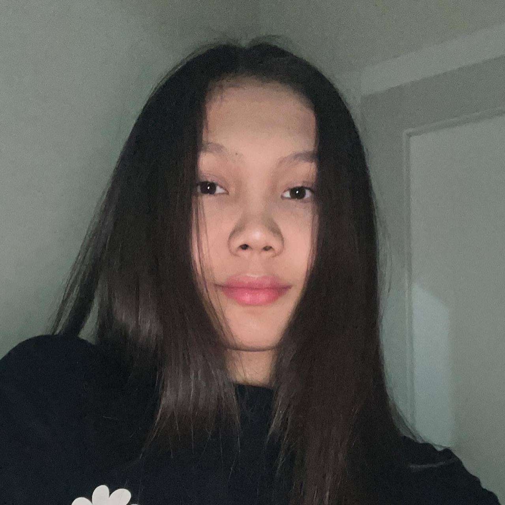

|  | About MeI have bachelor degree in Digital Journalist, graduated Astana IT University in 2025(3 years of study). I am a highly motivated professional with a broad range of skills and experiences in the field of communication, podcasting, broadcasting. |
Participated in the production of a weekly radio news program, including researching and writing stories, producing audio packages, and hosting live broadcasts.
Developed an understanding of radio journalism, including the use of language, tone, and style appropriate for radio broadcasts.
One of the authors of "La Vida Loca" educational podcast.
We touch in important topics like academic and social issues in a student's life
Writing report, breaking news, review, articles, response paper
Grammar accuracy, sentence structure, clarity of expression, logical organization, word choice, fluency of expression
Researching and developing story idea, developing interview questions, Lighting and framing Shots, Working with Sound Design and Recording Equipment
Editing and Post-Production, Working with a Professional Editing Suite, Developing Storyboards
Interviewing techniques, LIVE reportage, Researching relevant topics, Analyzing data and drawing conclusions
Giving reflection, record radio news amd entertainment programs, podcasting for educational chanel
Kazakh: Native.First Language
Russion: Advanced.First Language
English:Advanced.C1 level
Turkish:Intermediate